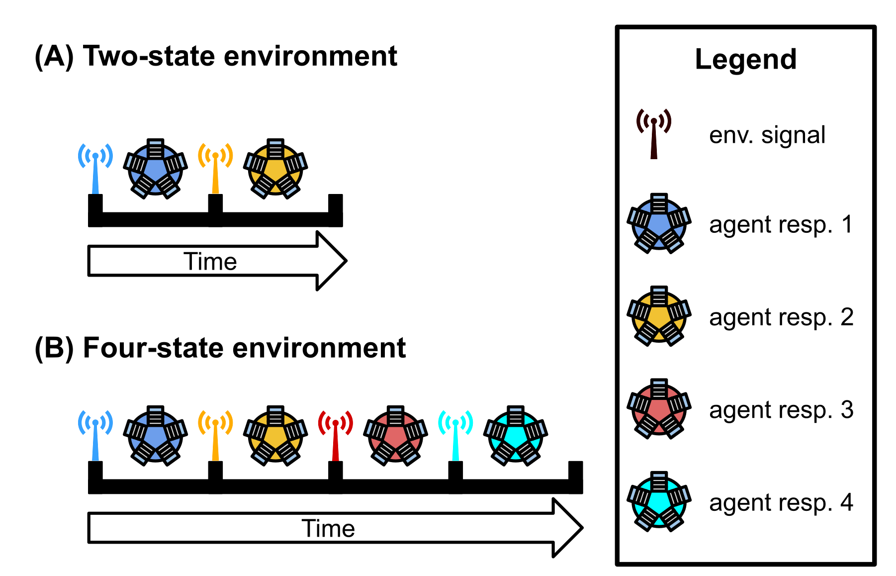
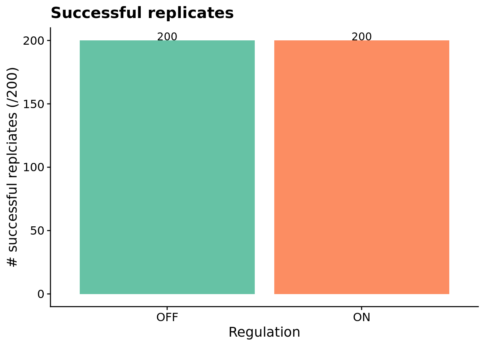
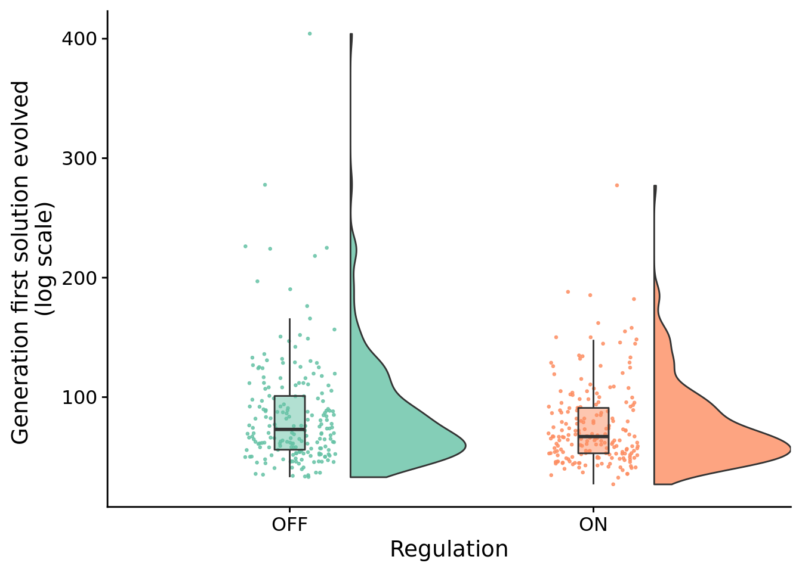
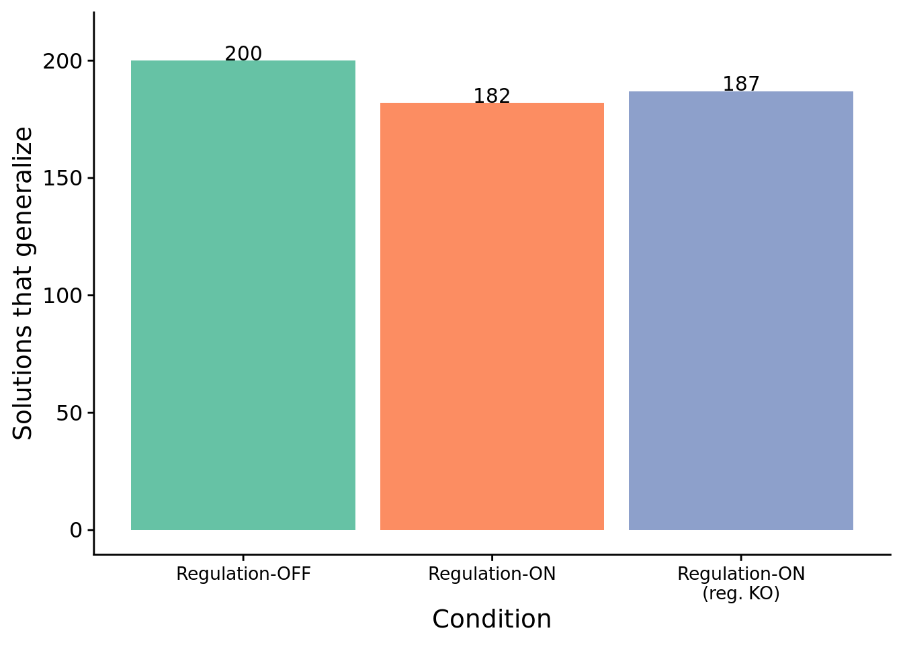

Chapter 10 Indpendent-signal problem analysis
Here, we give an overview of the independent-signal diagnostic problem, and we provide our data analyses for related experiments. All of our source code for statistical analyses and data visualizations is embedded in this document. The raw data can be found on the OSF project associated with this work (Lalejini, Moreno, and Ofria 2020).
Please file an issue or make a pull request on github to report any mistakes, ask questions, request more explanation, et cetera.
10.1 Overview
# Experimental parameters referenced in-text all in one convenient place.
time_steps <- 128
replicates <- 200
population_size <- 1000
generations <- 10000
env_complexities <- c(16)
# Settings for statistical analyses.
alpha <- 0.05
correction_method <- "bonferroni"
# Relative location of data.
working_directory <- "experiments/2020-11-11-chg-sig/analysis/" # << For bookdown
# working_directory <- "./" # << For local analysis
# Settings for visualization
cb_palette <- "Set2"
# Create directory to dump plots
dir.create(paste0(working_directory, "imgs"), showWarnings=FALSE)The independent-signal task requires programs to express a unique response for each of \(K\) distinct environmental signals (i.e., each signal has a distinct tag); the figure below is given as an example. Because signals are distinct, programs do not need to alter their responses to particular signals over time. Instead, programs may ‘hardware’ each of the \(K\) possible responses to the appropriate environmental signal. However, environmental signals are presented in a random order; thus, the correct order of responses will vary and cannot be hardcoded. As in the signal-counting task, programs respond by executing one of \(K\) response instructions. Otherwise, evaluation (and fitness assignment) on the independent-signal task mirrors that of the signal-counting task.

Requiring programs to express a distinct instruction in response to each environmental signal represents programs having to perform distinct behaviors.
We afforded programs 128 time steps to express the appropriate response after receiving an environmental signal. Once the allotted time to respond expires or the program expresses any response, the program’s threads of execution are reset, resulting in a loss of all thread-local memory. Only the contents of a program’s global memory and each function’s regulatory state persist. The environment then produces the next signal (distinct from all previous signals) to which the program may respond. A program’s fitness is equal to the number of correct responses expressed during evaluation.
We evolved populations of 1000 SignalGP programs to solve the independent-signal task at \(K=16\) (where \(K\) denotes the number of environmental signals). We evolved populations for 10^{4} generations or until an program capable of achieving a perfect score during task evaluation (i.e., able to express the appropriate response to each of the \(K\) signals) evolved.
We ran 200 replicate populations (each with a distinct random number seed) of each of the following experimental conditions:
- a regulation-enabled treatment where programs have access to genetic regulation.
- a regulation-disabled treatment where programs do not have access to genetic regulation.
Note this task does not require programs to shift their response to particular signals over time, and as such, genetic regulation is unnecessary. Further, because programs experience environmental inputs in a random order, erroneous genetic regulation can manifest as cryptic variation. For example, non-adaptive down-regulation of a particular response function may be neutral given one sequence of environmental signals, but may be deleterious in another. We expected regulation-enabled SignalGP to exhibit non-adaptive plasticity, potentially resulting in slower adaptation and non-general solutions.
10.2 Analysis Dependencies
Load all required R libraries.
library(ggplot2)
library(tidyverse)
library(cowplot)
library(RColorBrewer)
library(viridis)
source("https://gist.githubusercontent.com/benmarwick/2a1bb0133ff568cbe28d/raw/fb53bd97121f7f9ce947837ef1a4c65a73bffb3f/geom_flat_violin.R")These analyses were conducted in the following computing environment:
## _
## platform x86_64-pc-linux-gnu
## arch x86_64
## os linux-gnu
## system x86_64, linux-gnu
## status
## major 4
## minor 0.4
## year 2021
## month 02
## day 15
## svn rev 80002
## language R
## version.string R version 4.0.4 (2021-02-15)
## nickname Lost Library Book10.3 Setup
Load data, initial data cleanup, configure some global settings.
# Load data file
data_loc <- paste0(working_directory, "data/max_fit_orgs.csv")
data <- read.csv(data_loc, na.strings="NONE")
# Define function to summarize regulation/memory configurations.
get_con <- function(reg, mem) {
if (reg == "0" && mem == "0") {
return("none")
} else if (reg == "0" && mem=="1") {
return("memory")
} else if (reg=="1" && mem=="0") {
return("regulation")
} else if (reg=="1" && mem=="1") {
return("both")
} else {
return("UNKNOWN")
}
}
# Specify experimental condition for each datum.
data$condition <- mapply(
get_con,
data$USE_FUNC_REGULATION,
data$USE_GLOBAL_MEMORY
)
data$condition <- factor(
data$condition,
levels=c("regulation", "memory", "none", "both")
)
# For convenience, create a data set with only solutions
# Filter data to include only replicates labeled as solutions
sol_data <- filter(
data,
solution=="1"
)
# A lookup table for task complexities
task_label_lu <- c(
"2" = "2-signal task",
"4" = "4-signal task",
"8" = "8-signal task",
"16" = "16-signal task",
"32" ="32-signal task"
)
# Configure our default graphing theme
theme_set(theme_cowplot())10.4 Does regulation hinder the evolution of successful genotypes?
Here, we look at the number of solutions evolved under regulation-enabled and regulation-disabled conditions. A program is categorized as a ‘solution’ if it can correctly respond to each of the \(K\) environmental signals during evaluation.
# Graph the number of solutions evolved in each condition, faceted by environmental complexity
ggplot( sol_data, aes(x=condition, fill=condition) ) +
geom_bar() +
geom_text(
stat="count",
mapping=aes(label=..count..),
position=position_dodge(0.9),
vjust=0
) +
scale_x_discrete(
name="Regulation",
breaks=c("memory","both"),
labels=c("OFF","ON")
) +
scale_fill_brewer(
palette=cb_palette
) +
ylab("# successful replciates (/200)") +
theme(legend.position = "none") +
ggtitle("Successful replicates")
Programs capable of achieving a perfect score on the independent-signal task (for a given sequence of environment signals) evolve in all 200 replicates of each condition (i.e., with and without access to genetic regulation). These programs, however, do not necessarily generalize across all possible sequences of environmental signals.
10.4.1 Does access to regulation slow adaptation?
I.e., did successful regulation-enabled programs take longer (more generations) to evolve than those evolved in the regulation-disabled treatment?
ggplot( sol_data, aes(x=condition, y=update, fill=condition) ) +
geom_flat_violin(
position = position_nudge(x = .2, y = 0),
alpha = .8
) +
geom_point(
aes(y = update, color = condition),
position = position_jitter(width = .15),
size = .5,
alpha = 0.8
) +
geom_boxplot(
width = .1,
outlier.shape = NA,
alpha = 0.5
) +
scale_x_discrete(
name="Regulation",
breaks=c("memory", "both"),
labels=c("OFF","ON")
) +
scale_fill_brewer(
palette=cb_palette
) +
scale_color_brewer(
palette=cb_palette
) +
scale_y_continuous(
name="Generation first solution evolved \n(log scale)",
) +
guides(fill = FALSE) +
guides(color = FALSE)
##
## Wilcoxon rank sum test with continuity correction
##
## data: update by condition
## W = 22188, p-value = 0.05845
## alternative hypothesis: true location shift is not equal to 0
## 95 percent confidence interval:
## -3.860236e-05 1.000000e+01
## sample estimates:
## difference in location
## 5.000013The difference in the number of generations before a solution arises is not significantly different.
10.4.2 Do they generalize?
Note that solutions may or may not generalize beyond the sequence of environmental signals on which they achieved a perfect score (and were thus categorized as a ‘solution’). We re-evaluated each ‘solution’ on a random sample of 5000 sequences of environmental signals to test for generalization. We deem programs as having successfully generalized only if they responded correctly in all 5000 tests.
To see if regulation is preventing some regulation-enabled solutions from generalizing, we test generalization for regulation-enabled solutions with their regulation faculties knocked out (i.e., regulation instructions replaced with no-operations).
# Grab count data to make bar plot life easier
num_solutions_reg <- length(filter(data, condition=="both" & solution=="1")$SEED)
num_generalize_reg <- length(filter(data, condition=="both" & all_solution=="1")$SEED)
num_generalize_ko_reg <- length(filter(data, condition=="both" & all_solution_ko_reg=="1")$SEED)
num_generalize_mem <- length(filter(data, condition=="memory" & all_solution=="1")$SEED)
sol_cnts <- data.frame(x=1:3)
sol_cnts$type <- c("reg_generalize", "reg_generalize_ko_reg", "mem_generalize")
sol_cnts$val <- c(num_generalize_reg, num_generalize_ko_reg, num_generalize_mem)
ggplot( sol_cnts, aes(x=type, y=val, fill=type) ) +
geom_bar(stat="identity") +
geom_text(
aes(label=val),
stat="identity",
position=position_dodge(0.75),
vjust=-0.01
) +
scale_x_discrete(
name="Condition",
limits=c(
"mem_generalize",
"reg_generalize",
"reg_generalize_ko_reg"
),
labels=c(
"Regulation-OFF",
"Regulation-ON",
"Regulation-ON\n(reg. KO)"
)
) +
scale_fill_brewer(
palette=cb_palette
) +
scale_y_continuous(
name="Solutions that generalize",
limits=c(0, 210),
breaks=seq(0,200,50)
) +
theme(
legend.position="none",
axis.text.x = element_text(size=10)
) +
ggsave(paste0(working_directory, "imgs/chg-env-16-generalization.png"), width=4,height=4)
All regulation-disabled programs successfully generalized.
table <- matrix(c(num_generalize_reg,
num_generalize_mem,
200 - num_generalize_reg,
200 - num_generalize_mem),
nrow=2)
rownames(table) <- c("reg-augmented", "reg-disabled")
colnames(table) <- c("success", "fail")
print(table)## success fail
## reg-augmented 182 18
## reg-disabled 200 0##
## Fisher's Exact Test for Count Data
##
## data: table
## p-value = 5.113e-06
## alternative hypothesis: true odds ratio is not equal to 1
## 95 percent confidence interval:
## 0.0000000 0.2115509
## sample estimates:
## odds ratio
## 0The difference in number of generalizing solutions between regulation-enabled and regulation-disabled conditions is statistically significant (Fisher’s exact test).
Moreover, 5 of the 18 non-generalizing programs generalize when we knockout genetic regulation. Upon close inspection, the other 13 non-general programs relied on genetic regulation to achieve initial success but failed to generalize to arbitrary environment signal sequences.
References
Lalejini, Alexander M, Matthew A Moreno, and Charles Ofria. 2020. “Tag-Based Genetic Regulation for Genetic Programming.” OSF. https://doi.org/10.17605/OSF.IO/928FX.